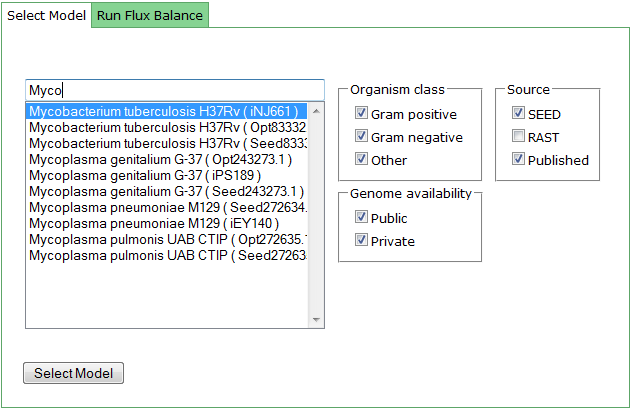

Filter Select
There are multiple ways to select a model you are interested in.
By default, when the Model SEED page loads, the 'Selected models/FBA' tab will be selected. Here you can see the total number of models in the database, as well as the number of compounds and reactions.

A list of the available models can be found in the 'Select Model' tab. You can scroll through the list to browse the models, using the checkboxes to narrow the choices. If you find a model you want to examine, highlight the model in the list and click the 'Select Model' button.
Or if you already know the model, begin typing the organism name or id into the box and the list will be filtered.

top